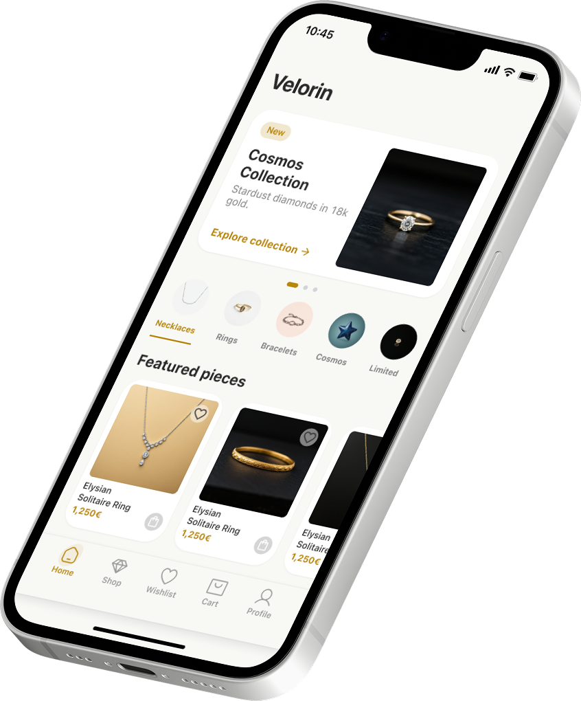

Velorin Jewelry.
A premium mobile application designed for an exclusive jewelry house. The interface blends minimalist elegance with a high-end shopping experience, focusing on tactile interactions and visual storytelling.

The Luxury Experience
Velorin required a digital presence that matched the exclusivity of their physical ateliers. The challenge was to translate the tactile sensation of luxury shopping into a digital interface.
I focused on a design language that uses whitespace as a luxury commodity, combined with smooth animations and high-fidelity product photography to create an immersive brand world.


Outcome & Reflection
The Velorin mobile app redefined the brand's digital engagement, seeing a significant increase in high-value online inquiries. The project successfully balanced functional e-commerce requirements with an uncompromising luxury aesthetic.